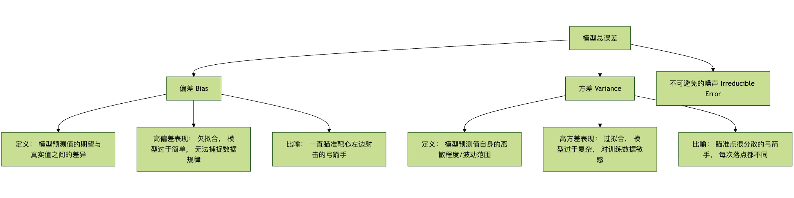

正則化
想像してみてください。私たちが自転車の乗り方を学んでいるところを。最初は、非常に緊張し、両手でハンドルをしっかり握り、体が硬直し、すべての動作の詳細を覚えようとするかもしれません。この細部に注意しすぎて、すべての微小な動きを完璧に制御しようとする状態は、機械学習では過学習。
私たちのモデル（初心者のあなたのようなもの）は複雑すぎて、トレーニングデータのすべてのサンプルを、ノイズやランダムな変動まで含めて完璧に記憶してしまい、その結果、新しい未見のデータ（例えば実際に路上で自転車に乗る場合）に直面したとき、パフォーマンスが非常に悪く、汎化能力に欠けます。
正則化はこの問題を解決するために生まれた中核技術であり、その核心的な考え方は次のとおりです：モデルの学習への熱意を冷まし、細部にこだわりすぎないようにして、新しい環境での適応能力を高めること簡単に言えば、正則化は、モデル学習の目的関数（損失関数）に追加のペナルティ項を加えることで、モデルの複雑さを制限し、トレーニングデータの特定のパターンに過度に依存するのを防ぎます。
本記事では、正則化の原理、一般的な手法、および実践的なエンジニアリング応用について深く理解していきます。
基本概念：バイアスとバリアンスのトレードオフ
正則化を深く理解する前に、機械学習モデルの誤差の2つの主要な原因を理解する必要があります：バイアスとバリアンス。これにより、正則化が一体何を調整しているのかを理解するのに役立ちます。

- バイアスが測っているのは、モデル自体の系統的誤差。高バイアスは、モデルが単純すぎて、トレーニングデータの基本的なパターンさえも学習できていない（未学習）ことを意味します。
- バリアンスが測っているのは、モデルのトレーニングデータ内のランダムな変動に対する感度。高バリアンスは、モデルが複雑すぎて、トレーニングデータ内のノイズまで法則として学習してしまう（過学習）ことを意味します。
私たちの目標は、バイアスとバリアンスのトレードオフの最適点を見つけて、総誤差を最小化することです。正則化は、バイアスを少し増やす（モデルを少し簡単にする）ことで、バリアンスを大幅に減らすという方法で、モデル全体の汎化性能を向上させる効果的な手段です。
L1 と L2 正則化
最も古典的な正則化方法は、損失関数にモデルの重みパラメータに基づくペナルティ項を直接追加することです。ペナルティ項の計算方法に応じて、主にL1とL2正則化に分けられます。
損失関数の変化
正則化されていない損失関数（平均二乗誤差 MSE を例とする）：Loss = (1/n) * Σ(真实值 - 预测值)²
正則化項を追加した後の損失関数：Loss_正则化 = Loss + λ * Penalty(权重)
ここで：
λλ (lambda) は正則化の強さの係数、0より大きいハイパーパラメータです。ペナルティの強さを制御します。λλが大きいほど、モデルの複雑さに対するペナルティが重くなり、モデルはより単純になります。Penalty(权重)はペナルティ項であり、L1 と L2 では定義が異なります。
L1 正則化（Lasso Regression）
- ペナルティ項：モデルのすべての重みパラメータの絶対値の和。
- 式：
Penalty = Σ|w_i|、ここでw_iは i 番目の重みです。 - 損失関数：
Loss_L1 = Loss + λ * Σ|w_i|
主な特徴と効果：
- 特徴選択：L1正則化はスパースな重み行列を生成する傾向があります、つまりそれは多くの重要でない特徴の重みを直接00 に圧縮します。これは自動的に特徴選択を行ったことになり、モデルは最も重要な特徴だけを保持します。
- 幾何学的解釈：その制約条件は幾何学的には「ひし形」（2次元ではひし形）になります。最適解の点はこのひし形の「角」に当たりやすく、角上の点は一部の座標が0であることを意味します。
コード例：
例
from sklearn.datasets import make_regression
from sklearn.model_selection import train_test_split
# シミュレーションデータを生成
X, y = make_regression(n_samples=100, n_features=10, noise=0.1, random_state=42)
X_train, X_test, y_train, y_test = train_test_split(X, y, test_size=0.2, random_state=42)
# L1正則化モデル（Lasso）を作成し、正則化強度 alpha（すなわち λ）を設定
lasso_model = Lasso(alpha=0.1) # alpha が大きいほど、ペナルティが強くなり、より多くの重みが 0 になる
lasso_model.fit(X_train, y_train)
# モデルの係数（重み）を確認し、スパース性を観察する
print("Lasso モデル係数：")
for i, coef in enumerate(lasso_model.coef_):
print(f" 特徴 {i}: {coef:.4f}")
# 非ゼロの重みの数を集計する
non_zero_count = sum(lasso_model.coef_ != 0)
print(f"\n非ゼロの重みを持つ特徴の数： {non_zero_count} / {X.shape)
出力：
Lasso 模型系数： 特征 0: 16.6855 特征 1: 54.0447 特征 2: 5.0302 特征 3: 63.5492 特征 4: 93.4587 特征 5: 70.5421 特征 6: 86.9569 特征 7: 10.2711 特征 8: 3.0697 特征 9: 70.7835 非零权重的特征数量： 10 / 10
L2 正則化（Ridge Regression）
- ペナルティ項：モデルのすべての重みパラメータの二乗和。
- 式：
Penalty = Σ(w_i)² - 損失関数：
Loss_L2 = Loss + λ * Σ(w_i)²
主な特徴と効果：
- 重み減衰：L2正則化は、すべての重みパラメータを0 に近づけますが、通常は 0 にはなりません。すべての重みを均等に縮小し、個々の重みが大きくなりすぎるのを防ぎます。
- 悪条件問題の改善：特徴間に多重共線性（強い相関）があるデータでは、通常の線形回帰は不安定になる可能性がありますが、L2正則化はこの問題を効果的に改善し、解をより安定させます。
- 幾何学的解釈：その制約条件は幾何学的には「円形」（2次元では円形）になります。最適解の点は、尖った角ではなく、この円の「辺」に当たりやすくなります。
コード例：
例
# L2正則化モデル（Ridge）を作成
ridge_model = Ridge(alpha=1.0) # alpha は λ に相当
ridge_model.fit(X_train, y_train)
# モデルの係数を確認し、重みの減衰を観察する
print("Ridge モデル係数：")
for i, coef in enumerate(ridge_model.coef_):
print(f" 特徴 {i}: {coef:.4f}")
# Lasso と Ridge の係数の違いを比較する
print("\n係数比較（Lasso vs Ridge）:")
print("特徴 | Lasso 係数 | Ridge 係数")
print("-" * 35)
for i in range(len(lasso_model.coef_)):
print(f"{i:4d} | {lasso_model.coef_[i]:11.4f} | {ridge_model.coef_[i]:11.4f}")
L1 と L2 の比較まとめ
| 特性 | L1 正則化（Lasso） | L2 正則化（Ridge） |
|---|---|---|
| ペナルティ項 | `Σ | w_i |
| 解の特性 | スパース解、多くの重みが 0 になる | デンス解、重みは 0 に近いが 0 ではない |
| 主な機能 | 特徴選択 | 重み減衰， 安定な解 |
| 幾何学的形状 | ひし形 / 多面体 | 円形 / 球体 |
| 計算 | 最適化は比較的複雑（至るところで微分可能ではない） | 最適化は簡単（至るところで微分可能） |
| 適用シーン | 特徴の数が多く、関連する特徴は少数のみと考える場合 | すべての特徴が貢献する可能性がある、または共線性が存在する場合 |
Elastic Net（エラスティックネット）
Elastic Net は L1 と L2 正則化の折衷案であり、両方のペナルティ項を同時に含みます。Loss_ElasticNet = Loss + λ1 * Σ|w_i| + λ2 * Σ(w_i)²
L1 の特徴選択能力と L2 の安定性を組み合わせたものであり、特徴の次元が非常に高く、特徴間に相関関係がある場合に適しています。
例
elastic_model = ElasticNet(alpha=0.1, l1_ratio=0.5) # l1_ratio は L1 と L2 の混合比率を制御する
elastic_model.fit(X_train, y_train)
その他の正則化手法
損失関数を直接変更する以外にも、トレーニングプロセスやモデル構造を変更することで正則化を実現する方法があります。
Dropout（ニューラルネットワーク用）
Dropout はニューラルネットワークにおいて非常に効果的な正則化手法です。それはトレーニング中に、ネットワーク内の一部のニューロンをランダムに一時的に「不活性化」します（その出力を0にします）。
動作原理：
- 各トレーニングバッチ（batch）において、確率
p（例：0.5）で一部のニューロンをランダムに破棄します。 - 順伝播と逆伝播は、残ったニューロンでのみ行われます。
- テストまたは予測時には、すべてのニューロンを使用しますが、ニューロンの出力には
(1-p)期待値を一致させるために、p（保持確率）を掛けます。
核心となる考え： ニューロン間の複雑な共同適応が生じるのを防ぎ、ネットワークによりロバストと分散の特徴表現を学習させます。これはチームのようなもので、特定の主要メンバーだけに依存するのではなく、各人が独立して働く能力を持つ必要があります。そうすれば、誰かが欠席してもチームは正常に機能できます。
コード例 (TensorFlow/Keras を使用)：
例
from tensorflow.keras.models import Sequential
from tensorflow.keras.layers import Dense, Dropout
model = Sequential([
Dense(128, activation='relu', input_shape=(input_dim,)),
Dropout(0.5), # 前の層の後に Dropout 層を追加、ドロップ率 50%
Dense(64, activation='relu'),
Dropout(0.3), # ドロップ率 30%
Dense(1, activation='sigmoid') # 出力層
])
model.compile(optimizer='adam', loss='binary_crossentropy', metrics=['accuracy'])
早期停止
早期停止法は、シンプルで効率的な正則化戦略です。損失関数を変更するのではなく、モデルの検証セットでの性能を監視します。
操作手順：
- データをトレーニングセットと検証セットに分割します。
- トレーニングセットでモデルを訓練し、定期的に検証セットで性能を評価します（例：1エポック訓練するごと）。
- 検証セットでの性能（損失など）が連続する複数の周期にわたって向上しなくなった、あるいは低下し始めた場合、すぐに訓練を停止します。
核心的な考え方： モデルが訓練データへの過学習を始めようとする（つまり検証セットの誤差が上昇し始める）その瞬間に訓練を停止し、汎化能力が最良のモデル重みを得ます。
例
# 早期停止コールバック関数を定義
# monitor: 監視する指標、例: 'val_loss'
# patience: 許容エポック数、このエポック数内で検証セットの性能が改善しない場合に停止
# restore_best_weights: 監視指標が最も良かったエポックの重みに復元するかどうか
early_stopping = EarlyStopping(
monitor='val_loss',
patience=10,
restore_best_weights=True
)
# model.fit で使用
history = model.fit(
X_train, y_train,
validation_data=(X_val, y_val),
epochs=100,
callbacks=[early_stopping] # コールバック関数のリストを渡す
)
実践演習：正則化効果の総合比較
完全な例を通して、異なる正則化手法が回帰タスクに与える効果を比較しましょう。
例
import matplotlib.pyplot as plt
from sklearn.linear_model import LinearRegression, Lasso, Ridge, ElasticNet
from sklearn.preprocessing import PolynomialFeatures
from sklearn.pipeline import make_pipeline
from sklearn.metrics import mean_squared_error
# 1. ノイズを含む非線形データを生成
np.random.seed(42)
X = np.linspace(-3, 3, 100).reshape(-1, 1)
y_true = 0.5 * X.ravel()**2 + X.ravel() # 実際の二次の関係
y = y_true + np.random.randn(100) * 0.8 # ノイズを追加
# 2. 異なる複雑度のモデルを作成（多項式特徴を使用）
degree = 10 # 10次の多項式を使用、これは過学習しやすい
models = {
'正則化なし': make_pipeline(PolynomialFeatures(degree), LinearRegression()),
'L1 (Lasso)': make_pipeline(PolynomialFeatures(degree), Lasso(alpha=0.01, max_iter=10000)),
'L2 (Ridge)': make_pipeline(PolynomialFeatures(degree), Ridge(alpha=0.1)),
'ElasticNet': make_pipeline(PolynomialFeatures(degree), ElasticNet(alpha=0.01, l1_ratio=0.5))
}
# 3. 訓練して予測
X_plot = np.linspace(-3.5, 3.5, 200).reshape(-1, 1)
plt.figure(figsize=(12, 8))
plt.scatter(X, y, s=20, alpha=0.6, label='トレーニングデータ (ノイズ含む)')
plt.plot(X, y_true, 'k-', linewidth=3, label='真の関数')
for name, model in models.items():
model.fit(X, y)
y_plot = model.predict(X_plot)
mse = mean_squared_error(y, model.predict(X))
plt.plot(X_plot, y_plot, '--', linewidth=2, label=f'{name} (MSE: {mse:.3f})')
plt.xlabel('X')
plt.ylabel('y')
plt.title('異なる正則化手法による過学習抑制効果の比較 (10次多項式)')
plt.legend(loc='best')
plt.grid(True, alpha=0.3)
plt.show()
演習タスク：
- 上記のコードを実行し、正則化なしのモデルがノイズに適合しようとして激しく変動する（過学習）のに対し、正則化後のモデル曲線がより滑らかで、真の関数に近いことを観察してください。
- 調整してみましょう
degree（多項式の次数）と各モデルのalpha（正則化の強さ）パラメータがモデルの適合効果に与える影響を観察します。 - （発展）データをトレーニングセットとテストセットに分割し、各モデルのテストセットでの MSE を計算して、正則化による汎化能力の向上を検証します。
まとめとエンジニアリングの提案
正則化は機械学習エンジニアのツールボックスに必須の強力なツールです。効果的に適用するには、以下のポイントを覚えておいてください：
- 問題の本質を理解する： まず学習曲線や検証セットの性能などから、モデルが過学習（高分散）の問題に直面しているかどうかを判断します。
- シンプルなものから始める： 通常はまずL2 正則化を試すとよいでしょう。安定しており調整が容易だからです。特徴の次元が非常に高く特徴選択が必要な場合は、次にL1 或 エラスティックネット。
- パラメータ調整が鍵： 正則化の強さ
λ(またはalpha) は極めて重要なハイパーパラメータです。必ず交差検証によって慎重に選択する必要があります。 - 組み合わせて使う： 実際には、正則化手法はしばしば組み合わせて使用されます。例えば、ディープニューラルネットワークを訓練する際、Dropout + L2 重み減衰 + 早期停止法は非常によく使われる組み合わせです。
- 分野に応じた適用： コンピュータビジョンタスクでは、Dropout と Batch Normalization（ある程度の正則化効果もあります）が非常に効果的です。系列モデル（RNN、Transformerなど）では、Dropout と重み減衰がよく使われます。
正則化の最終的な目標は、モデルを「丸暗記」の訓練データから、「深い理解」のデータ背後にある普遍的な法則へと導き、実世界でより信頼性の高い予測をできるようにすることです。それを習得すれば、モデルの汎化能力を高める重要な鍵を手に入れたことになります。
その他の拡張